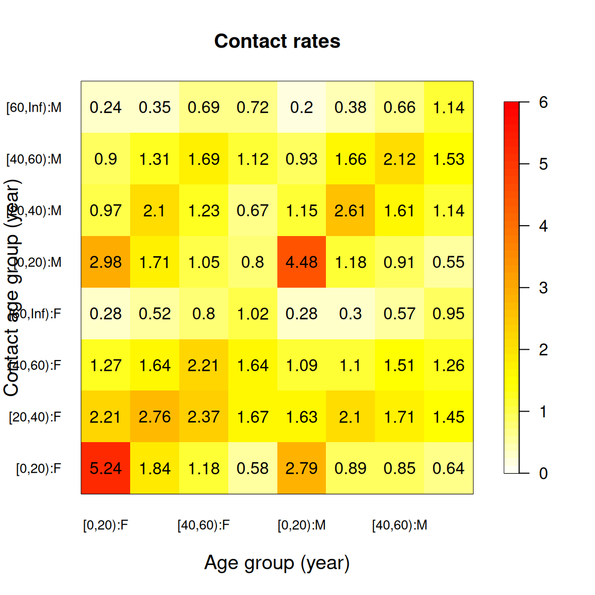

data(polymod)
uk <- polymod[country == "United Kingdom"]
uk$participants <- uk$participants[part_gender %in% c("F", "M")]
uk$contacts <- uk$contacts[cnt_gender %in% c("F", "M")]
result <- uk |>
assign_age_groups(age_limits = c(0, 20, 40, 60)) |>
compute_matrix(by = c("age", "gender"))Most of the time a contact matrix is indexed by age alone: rows and columns are age groups, and each cell is a mean number of contacts. But contact surveys record more than age, and mixing usually depends on those other variables too. Men and women mix differently, and so do people in different settings. compute_matrix() can build a matrix over any combination of groupings, and the post-processing functions carry those groupings through. This vignette covers the two-dimensional case; the same recipes extend to three or more.
The idea, and the flattened representation used below, follow Manna et al. (2024).
Building a two-way matrix
Start from the usual pipeline, but hand compute_matrix() a by argument naming the groupings you want. Here we cross age with the participant’s gender.
The gender column in POLYMOD carries a few blank entries on the contact side, so we drop those first. A matrix can only be built over levels that are actually recorded, and symmetrise() later on will need the two sides to share them.
With two groupings the result is no longer a plain matrix. Its matrix element is a four-dimensional array: the first two axes index the participant (age, then gender), the last two index the contact.
dim(result$matrix)
#> [1] 4 2 4 2Four age groups and two genders give a 4 x 2 block on each side. The groupings field records what produced those axes, and you can read it back:
result$groupings
#> [[1]]
#> [[1]]$name
#> [1] "age"
#>
#> [[1]]$part
#> [1] "age.group"
#>
#> [[1]]$cnt
#> [1] "contact.age.group"
#>
#>
#> [[2]]
#> [[2]]$name
#> [1] "gender"
#>
#> [[2]]$part
#> [1] "part_gender"
#>
#> [[2]]$cnt
#> [1] "cnt_gender"The flattened view
A four-dimensional array is awkward to read and to plot. flatten() collapses it to the two-dimensional form of Manna et al. (2024): a single T x T matrix whose rows and columns run over every combination of grouping levels, labelled with a colon.
flatten(result)
#> [0,20):F [20,40):F [40,60):F [60,Inf):F [0,20):M [20,40):M
#> [0,20):F 5.2378641 2.208738 1.266990 0.2815534 2.9757282 0.9708738
#> [20,40):F 1.8421053 2.759398 1.639098 0.5187970 1.7067669 2.0977444
#> [40,60):F 1.1833333 2.366667 2.208333 0.8000000 1.0500000 1.2333333
#> [60,Inf):F 0.5781250 1.671875 1.640625 1.0156250 0.7968750 0.6718750
#> [0,20):M 2.7878788 1.626263 1.085859 0.2777778 4.4848485 1.1515152
#> [20,40):M 0.8869565 2.095652 1.095652 0.2956522 1.1826087 2.6086957
#> [40,60):M 0.8547009 1.709402 1.512821 0.5726496 0.9145299 1.6068376
#> [60,Inf):M 0.6379310 1.448276 1.258621 0.9482759 0.5517241 1.1379310
#> [40,60):M [60,Inf):M
#> [0,20):F 0.8980583 0.2427184
#> [20,40):F 1.3082707 0.3533835
#> [40,60):F 1.6916667 0.6916667
#> [60,Inf):F 1.1250000 0.7187500
#> [0,20):M 0.9343434 0.2020202
#> [20,40):M 1.6608696 0.3826087
#> [40,60):M 2.1196581 0.6581197
#> [60,Inf):M 1.5344828 1.1379310For a plain age-only matrix flatten() returns it unchanged, so you can reach for it whenever you want the 2-D picture and not worry about how many groupings went in.
as.matrix() gives you the same thing, and plot() draws it as a heatmap:
plot(result)
The eight rows and eight columns are the age and gender strata; the block structure shows, for instance, how within-gender contacts compare to across-gender ones.
Post-processing across groupings
symmetrise() and per_capita() need to know the population behind each stratum. With one grouping that was a population by age; with several it is a population by every combination. align_ages() builds it for you from a table that has an age column plus a column for each other grouping.
population <- expand.grid(
age = limits_to_age_groups(0:90, notation = "brackets"),
gender = c("F", "M"),
stringsAsFactors = FALSE
)
population$population <- round(1e5 * exp(-(0:90) / 60))
survey_pop <- align_ages(population, result)
survey_pop
#> age gender population
#> 1 [0,20) F 1715025
#> 2 [20,40) F 1228870
#> 3 [40,60) F 880524
#> 4 [60,Inf) F 898067
#> 5 [0,20) M 1715025
#> 6 [20,40) M 1228870
#> 7 [40,60) M 880524
#> 8 [60,Inf) M 898067align_ages() coarsens the age column to the matrix’s age groups and matches the other groupings by name, so the result is exactly the survey_pop the post-processing functions expect. From here they behave as they do for a single grouping:
symmetric <- symmetrise(result, survey_pop = survey_pop)
per_capita_rates <- per_capita(result, survey_pop = survey_pop)symmetrise() enforces reciprocity across the full set of strata, so it insists the participant and contact sides carry the same levels. That is why we tidied the gender column at the start.
Choosing the groupings
Each entry in by names a grouping. "age" picks up the columns assign_age_groups() writes. A bare name such as "gender" resolves to the survey’s part_gender and cnt_gender columns. When the two sides are named differently, give the pair explicitly:
uk |>
assign_age_groups(age_limits = c(0, 20, 40, 60)) |>
compute_matrix(by = list("age", c(part = "part_gender", cnt = "cnt_gender")))Any number of groupings works the same way; the array simply gains two axes for each, and flatten(), plot(), as.matrix(), symmetrise() and per_capita() carry them through. split_matrix() is the exception: its decomposition into mean, normalisation and assortativity is defined for age-only matrices, so it still expects a single grouping.
References
Manna, Adriana, Lorenzo Dall’Amico, Michele Tizzoni, Márton Karsai, and Nicola Perra. 2024. “Generalized Contact Matrices Allow Integrating Socioeconomic Variables into Epidemic Models.” Science Advances 10 (41): eadk4606. https://doi.org/10.1126/sciadv.adk4606.